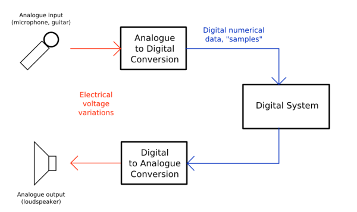

Digital audio is the encoding of an electrical signal that represents a sound wave. In the following image we see the digital signal flow diagram.
At the left of the image we have the medium in which sound is moving.

To capture pressure changes we need a microphone. Microphones are capable of sensing tiny pressure changes and transducing them to an electrical signal.
This electrical signal contain voltage variations that occurr along the cable connecting the microphone to the audio interface.
Inside the audio interface occurs the encoding of the electrical signal into numerical data. Each datum of that numerical data is called a sample
The digital system of the image is in charge of processing the samples. Pd is an example of such, naturally.
The bottom part of the image works exactly the same, only in reverse order.
Compare this image with (again) Max's diagram.
| Digital signal flow | Max Mathews' diagram |
|
Note that Max's diagram corresponds to the bottom part of the first image: generating samples with a computer.